Help your child learn a little every day
One concept card, one short quiz, and a review when it's due: Sidonie is a patient AI tutor for your child. After bedtime, it helps you work through a research paper, from reading and annotating to reviewing and citing. Everything stays in your own browser.
Free & open source (MIT) No account Bring your own API key
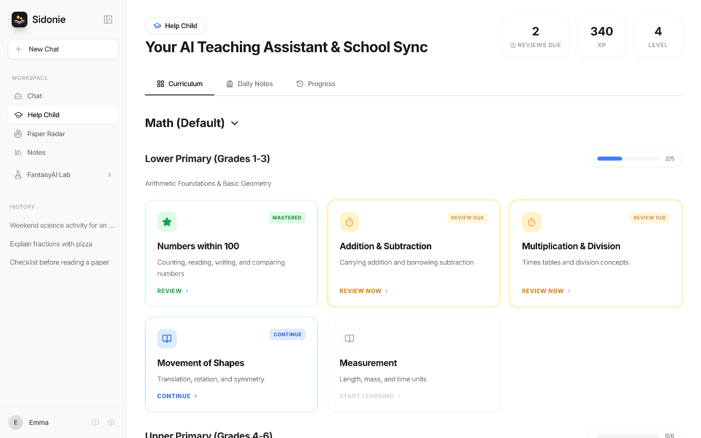
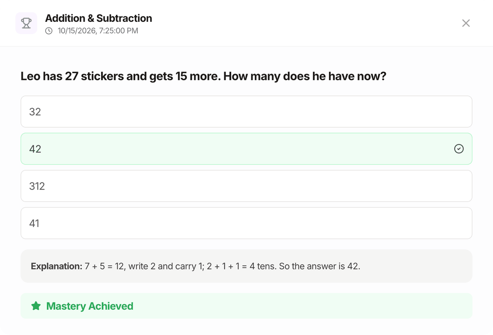
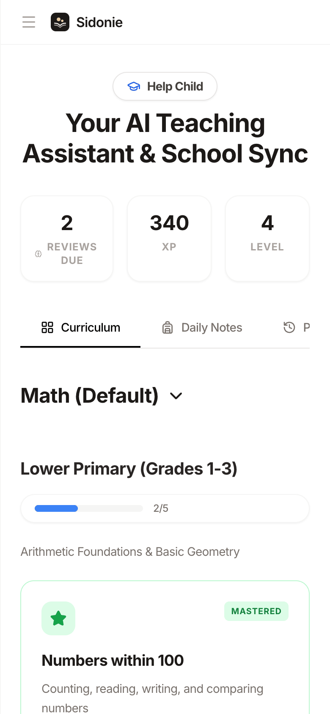
Concept cards, quizzes, spaced review
A built-in maths path from Grade 1 to university, or a course for any subject. Learn a little, practise, and review just before it's forgotten.
See the learning loop → Paper study for grown-upsFind, read, annotate, review, cite
A reading list and a paper workspace: bilingual full text, structured analysis, highlights and notes, flashcards and one-click citations.
See paper study →Built for my own family first
Sidonie is my wife's name. Every day I watched her and our child use AI tools that weren't really built for them: too generic for a child's homework, too scattered for a parent who still wants to keep up with research.
So I built Sidonie, at first just for the two people closest to me: a calm place for a child to learn and for a grown-up to keep thinking. If it works for our family, it may work for yours too.
Melon (李辉), founder of FantasyAI Lab
Learning, as a small loop
Not just another chat box. Every topic follows the same rhythm: understand it, practise it, and review it when it's due. A parent sitting alongside is all it needs.
-
1Concept card
Explained in words a child gets
One idea per card, with an everyday example and a tip. Anything unclear? Keep asking follow-up questions.
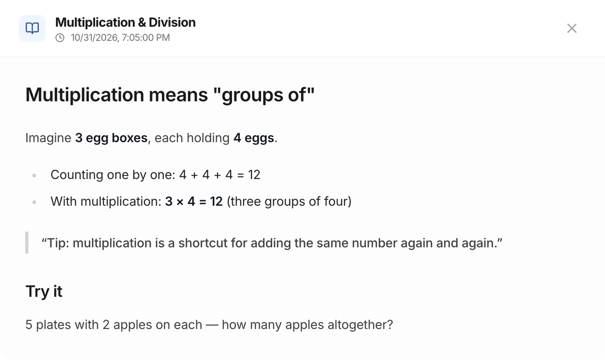
-
2Quiz
Practise now, see why right away
Multiple-choice questions with instant feedback and an explanation. Right or wrong, the answer decides when the topic comes back.
-
3Spaced review
It comes back just before it's forgotten
Every answer reschedules the next review. Get it right and the gap grows; get it wrong and the topic is due again straight away.
- Todaylearn
- +1 dayreview
- +3 daysreview
- +8 daysreview
- +22 daysreview
Review gaps after consecutive correct answers (default settings) 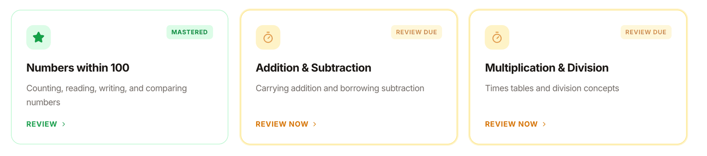
- Built-in maths pathFrom first grade all the way to university
- Any subjectAsk the AI for a course for any subject and grade
- Three card typesConcepts, quizzes and hands-on interactive visuals
More features
Keeps up with the teacher's homework, too
Jot down what the teacher sent home, as text or a photo, so homework time in the evening starts with a plan.
- Logged by day and subject, easy to look back on.
- The AI explains the key points to the parent: what is this task really about?
- A few practice questions of the same kind, on request.
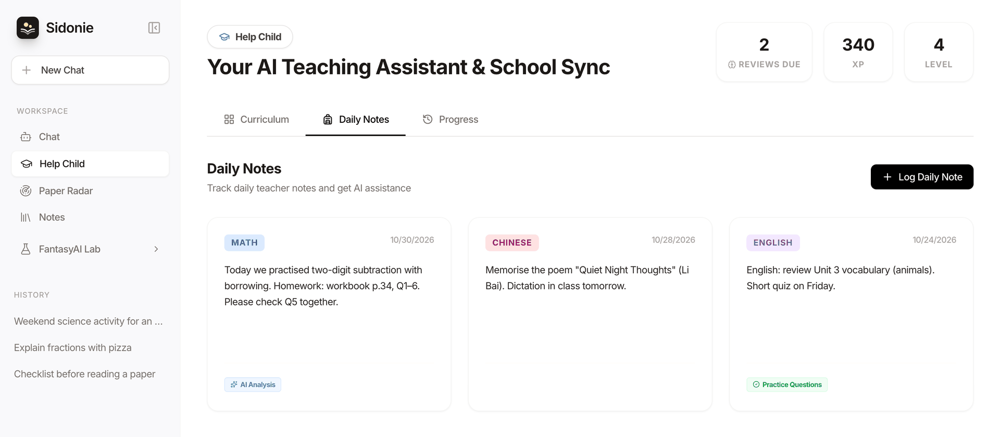
Every bit of effort, made visible
Finishing a topic earns XP, levels and badges, and a learning calendar records every session. Less nagging, more small wins.
- XP, levels and achievement badges a child can read at a glance.
- A learning calendar so parents can see what this week looked like.
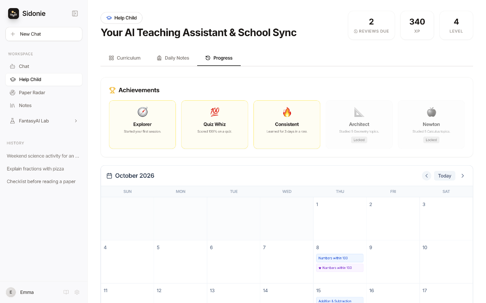
Works on a phone, too
Sidonie is a web app: open it in any desktop or phone browser. Nothing to install, no account to create.
- English and Chinese interface, switch any time.
- Open source and self-hostable: run it on your own computer or deploy it as a static site.
- Chat and notes: multi-session chat with PDF, Word and image uploads; save anything to notes.

After bedtime, actually finish that paper
Paper Radar is more than a feed of new papers. It walks you through every step from finding a paper to citing it, and the full text, notes and flashcards stay in your browser.
- 1FindBrowse new arXiv papers by topic or search
- 2SaveA reading list: to read, reading, read, tags
- 3ReadFull text in the browser, side-by-side translation
- 4UnderstandStructured analysis; ask the paper, with sources
- 5AnnotateHighlight, add notes, ask AI to explain a passage
- 6ReviewKey-term flashcards on a spaced schedule
- 7CiteCopy BibTeX, APA or GB/T 7714 in one click
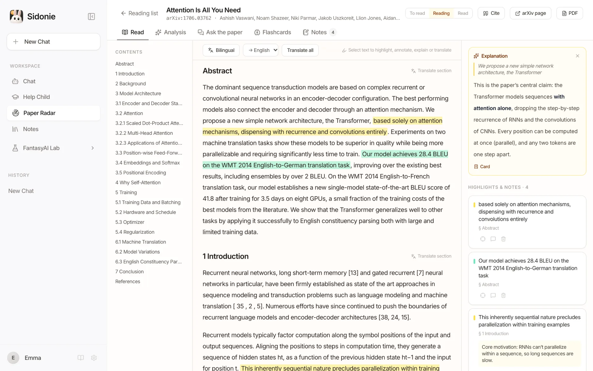
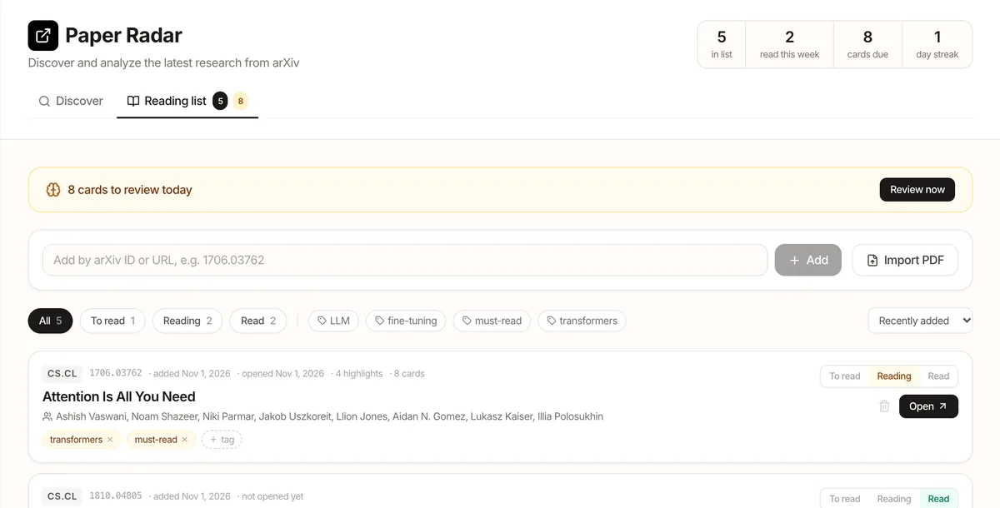
Reading list
Add arXiv papers by ID or URL, or import a local PDF. See at a glance what you read this week and how many cards are due.
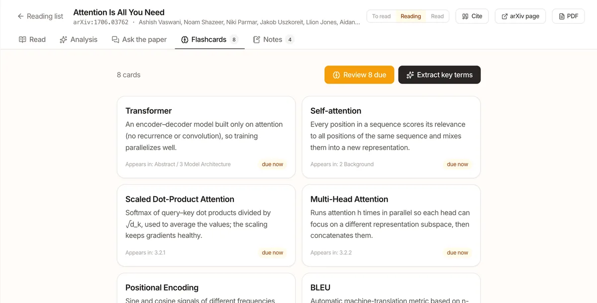
Flashcards
Pull out the key terms with plain explanations, then review them on the same spaced schedule as Help Child, so a paper doesn't fade the week after.
Also included
- Structured analysis: TL;DR, method, contributions, limitations, prerequisites.
- Ask the paper: relevant passages found locally; answers cite their sections.
- Export to Notes: highlights, notes and the citation in one note.
- Works without a key: reading, annotating, reviewing and citing need no API key.
Note: AI content in these screenshots (translation, explanation, flashcards) is demo text. Full-text extraction is heuristic: formulas and tables may come out garbled, and scanned PDFs have no text to extract.
Your child's learning stays in your browser
Sidonie is a purely static web app: there is no Sidonie backend, no account and no analytics.
Local-first
Chats, notes, your child's progress, your paper annotations and settings are saved only in this browser.
Bring your own key
Use your own model API key. It goes only to the provider you pick and is never bundled into the app.
No server
No sign-up, no login. With no Sidonie backend, we never see any of your data.
No tracking
No analytics or ad trackers in the app, and none on this website either.
| Chats, notes, progress, settings | Only in this browser's localStorage |
|---|---|
| Paper PDFs, full text, translations, notes and flashcards | Only in this browser (IndexedDB and localStorage) |
| API keys | In the browser, sent only to the model provider you choose |
| AI requests | Straight from your browser to Google Gemini, DeepSeek, Moonshot (Kimi) or Alibaba Cloud Bailian (Qwen) |
| Paper Radar searches and PDFs | To arXiv; searches in the online demo go through a public CORS proxy, which sees only your search terms |
To be clear: keys are stored in plain text in the browser, so anyone using this browser profile can read them. Use keys with spending limits and remove them on shared computers. There is no cloud sync yet, and clearing site data deletes everything.
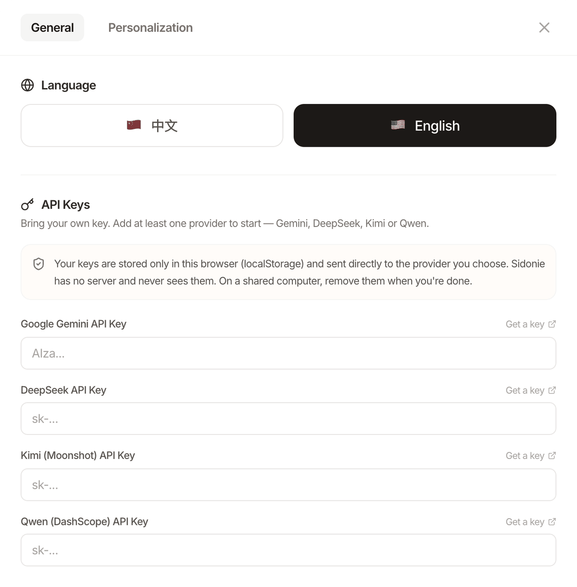
Use your own model key
Configure at least one provider to start. You pay the provider directly, and many offer a free tier.
With a Gemini key, Help Child and Paper Radar use Gemini first; otherwise they fall back to the other provider you configured.
What parents usually ask
Does it cost anything?
Sidonie itself is free and open source (MIT). Model usage is billed by the provider to your own key, and many providers have a free tier.
Do I need an account or an app?
Neither. Open the live demo, paste an API key under Settings → Models, and start. You can also run it on your own computer (npm run dev) or deploy it as a static site.
What ages and subjects does it cover?
The built-in path is maths from the early primary years to university. "Create course" asks the model to draft a course for any subject and grade.
Can my child use it alone?
It is designed for a parent and child to use together. AI-generated explanations and questions can be wrong, so check them with your child.
Is my API key safe?
Your key stays in your browser and is sent only to its provider; Sidonie has no server that could see it. It is stored in plain text, though, so anyone with access to this browser profile can read it. Prefer keys with spending limits and remove them on shared devices.
Will my child's progress follow us to another device?
No. Everything lives in the current browser and there is no cloud sync yet. Data export and import is on the roadmap.
Why does Paper Radar sometimes fail in the live demo?
arXiv's search API doesn't allow direct requests from browsers, so the demo relies on a public CORS proxy that is sometimes slow or down. Running it locally is more reliable. Paper PDFs download straight from arXiv, so you can still add a paper by its ID and read the full text when the proxy is down.
How accurate is the full-text extraction?
The text is extracted from the PDF in your browser. Two-column layouts, headings and hyphenation are handled, but formulas, tables and text inside figures can come out garbled, and scanned PDFs (images only) have no text to extract, so you get the abstract. For the parts that matter, check the original PDF.
Why "Sidonie"?
Sidonie is the author's wife's name; the project was built for her and their child first. Its Chinese name, 伴学 (bàn xué), means "learning alongside": keeping a child company while they learn.
Tonight, try one concept card together
Free, open source, and it starts in your browser.